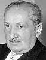

Philosophy Pages
| Dictionary | Study Guide | Logic | F A Q s | ||
|---|---|---|---|---|---|---|
| History | Timeline | Philosophers | Locke | |||
| Philosophy Pages
| Dictionary | Study Guide | Logic | F A Q s | ||
|---|---|---|---|---|---|---|
| History | Timeline | Philosophers | Locke | |||
|

Heidegger Life and Works . . Nothing . . Being-There . . Metaphysics Bibliography Internet Sources |
In the lecture, "What is Metaphysics?" Heidegger developed several of his themes in characteristically cumbersome language. The best way to exhibit the subject-matter of first philosophy is to pursue one actual metaphysical question; since all of them are inter-connected, each inevitably leads us into all of the others. Although traditional learning focusses on what is, Heidegger noted, it may be far more illuminating to examine the boundaries of ordinary knowledge by trying to study what is not.
What is Nothing, anyway?
It's not anything, and it's not something, yet it isn't the negation of something, either. Traditional logic is no help, since it merely regards all negation as derivative from something positive. So, Heidegger proposed, we must abandon logic in order to explore the character of Nothing as the background out of which everything emerges.
Carefully contemplating Nothing in itself, we begin to notice the importance and vitality of our own moods.
Above all else, Nothing is what produces in us a feeling of dread
{Ger. Angst}.
This deep feeling of dread, Heidegger held, is the most fundamental human clue to the nature and reality of Nothing.
Human beings truly exist, yet our "being-there" {Ger. Dasein} is subject to a systematic, radical uncertainty. Because we know that we will die, concern with our annihilation is an ever-present feature of human experience: Death is the key to Life. The only genuine question is why we are at all. Once we experience the joy[!?!] of dread, we recognize that our lives are limited—and therefore shaped—by death.
In just the same way, Heidegger argued, so Nothing is what shapes Being generally.
This reveals the most fundamental, transcendent reality, beyond all notions of what-is slipping over into what-is-not.
Even in the historical tradition, according to Heidegger, Nothing is shown to be the concomitant rather than the opposite of Being.
The only genuine philosophical question is why there is something rather than nothing.
Writing allegorically in "The Way Back into the Ground of Metaphysics," Heidegger notes that although metaphysics is undeniably the root of all human knowledge, we may yet wonder from what soil it springs. Since the study of beings qua beings can only be rooted in the ground of Being itself, there is a sense in which we must overcome metaphysics in order to appreciate its basis. Looking at beings of particular sorts—especially through the distorted lens of representational thinking—blocks every effort at profound understanding. We cannot grasp Being by looking at beings.
This was the point of Heidegger's introduction of the term Dasein. It isn't simply a synonym for "consciousness", he maintained, but indicates the vital fact that human beings—and only human beings—truly exist, in the fullest sense, only when being-there for-themselves. Properly understood, self-awareness leads to the authenticity of a life created out of nothing, in the face of dread, by reference only to one's own deliberate purposes.
For this process of self-creation, Time is crucial. What we are at present matters less than what we are becoming, through the dynamic temporal process that constitutes our personal histories. There is no abstract essence of human nature; there are only individual human beings unfolding themselves historically. In the end, this is the answer to the question of why there is something rather than nothing.
It is only because we choose being-there.
| History of Philosophy | |||||||
|---|---|---|---|---|---|---|---|
| Previous | Next | ||||||